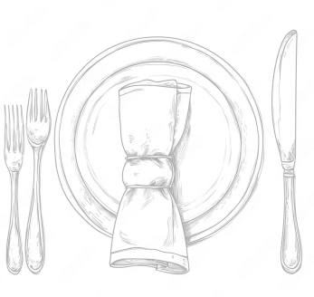
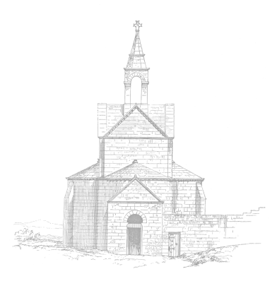

22 марта 17:00

Ярославская область, г. Ростов Великий, ул. Моравского, 6
Первый семейный бал благотворителей гимназии А.Л. Кекина
Войдите в историю, сделав вклад в целевой капитал гимназии А.Л. Кекина! Мужская классическая гимназия - воплощенная мечта статского советника, купца первой гильдии, непревзойдённого ростовского мецената Алексея Леонтьевича Кекина (1838 - 1897).
Наполнение вечера
Исторические танцы в формате мастер-класса
Исторический бал - это прежде всего танцевальная программа. Наш вечер будет наполнен простыми историческими танцами в формате мастер-класса, педагоги и хореографы из Исторического общества "N" будут проводить танцевальную часть мероприятия. Это значит, что танцы будут объясняться заранее и наличие хореографической подготовки не потребуется. Танцевать смогут все желающие.
Общение внутри предпринимательской среды
Наш благотворительный вечер - это прежде всего встреча активных, деятельных людей, многим из которых близка идея сохранения и восстановления исторического наследия страны. Здесь вы сможете познакомиться и пообщаться с единомышленниками, обменяться своими впечатлениями от вечера, а самое главное установить важные контакты с людьми, входящими в круг меценатов.
Выступления и интерактивы в стилистике XIX века
Гостей вечера ждет разнообразное наполнение бала. Вместе с историческими танцами вас ждет мастер-класс по письму гусиным пером, салон с историческими играми, рассказы о моде XIX века с возможностью рассмотреть антикварные вещи прекрасной эпохи. Также мы запланировали творческие номера от учеников гимназии и участников клуба исторической реконструкции.
Живая музыка
На вечере для вас будет звучать живая музыка в исполнении
квартета
А.О. Нероновой из города Москвы. Музыка является обязательным
аккомпанементом к нашим танцам, а также прекрасно будет заполнять
моменты общения гостей. Уверены, что музыкальные произведения XIX
века принесут наслаждение нашим гостям.
МОУ гимназия имени А.Л. Кекина
г. Ростов Великий
Оплата расходов на проект, строительство, оснащение, последующее содержание здания и зарплата педагогов вплоть до 1917 года осуществлялись за счет доходов, полученных от использования имущества и капитала местного купца-мецената Алексея Леонтьевича Кекина, который завещал городу Ростову: «... всё благоприобретённое недвижимое и движимое имущество своё (земли, дома, поместья, леса и аренды), в том числе торговлю, производимую под фирмою „Кекин и Кº“, и денежный капитал…». По сути это и есть Целевой капитал (Эндаумент), созданный благотворителем в конце XIX века.
Возрождение традиции благотворительности, продолжение дела А.Л. Кекина - одна из наших задач. Кекинское воспитание со временем изменит наше общество, вернёт идеи благотворительности и благодарности Родине за личную успешность. Верим, что идеи обязательного служения людям породят новых Кекиных.
Сувениры благотворителям
50 000 рублей
Благодарность (слева на фото)
100 000 рублей
Кокарда (справа на фото)
200 000 рублей и более
Именной знак (посередине на фото)
Программа пребывания в Ростове Великом
22 марта (Суббота)
11:00
Посещение Музея Ростовского купечества – усадьбы семьи Кекиных. Знакомство с историей и культурой ростовского купечества.
13:00
Самостоятельное заселение в гостиницы и обед
16:00
Встреча в гимназии им. А.Л. Кекина. Театрализованная экскурсия по гимназии. Посещение действующей обсерватории. Подготовка к балу. Активности для гостей. Сюрпризы.
17:00
Торжественное начало бала. Полонез, приветственные слова, показательные танцевальные мастер-классы, круги, показательные выступления младших школьников гимназии – участников курса «Исторический танец», совместный танец детей и гостей бала. Бал проходит в три отделения. В перерывах активности, фуршет.
21:00
Завершение бала. Выход к памятнику А.Л. Кекина. Выступления гостей. Торжественная церемония.
23 марта (Воскресенье)
11:00
Посещение церкви Паисия и Уара в Варницах, построенную на
средства
А.Л. Кекина, под сводом которой он захоронен.
Троице-Сергиев Варницкий монастырь, основанный по преданию на
месте рождения св. Сергия Радонежского, и на месте явления ему,
отроку Варфоломею, старца черноризца (по запросу).
12:00
Государственный Музей-заповедник «Ростовский кремль».
Успенский собор. Концерт колокольного звона.
Партнёры
Артель X Рыбаков Фонд X Гимназия имени А.Л. Кекина X Историческое общество «N» X Троице-Сергиев Варницкий монастырь X Музей «Дом ростовского купечества» X Государственный музей-заповедник «Ростовский кремль» X Администрация Ростовского муниципального района Ярославской области X LEGACY ES
Оставить заявку
ФИО
Телефон
Аккаунт в Telegram
В каком составе вы поедете на бал?
Нужна ли помощь с заселением в местные отели?
Нужен ли вам прокат исторических платьев?